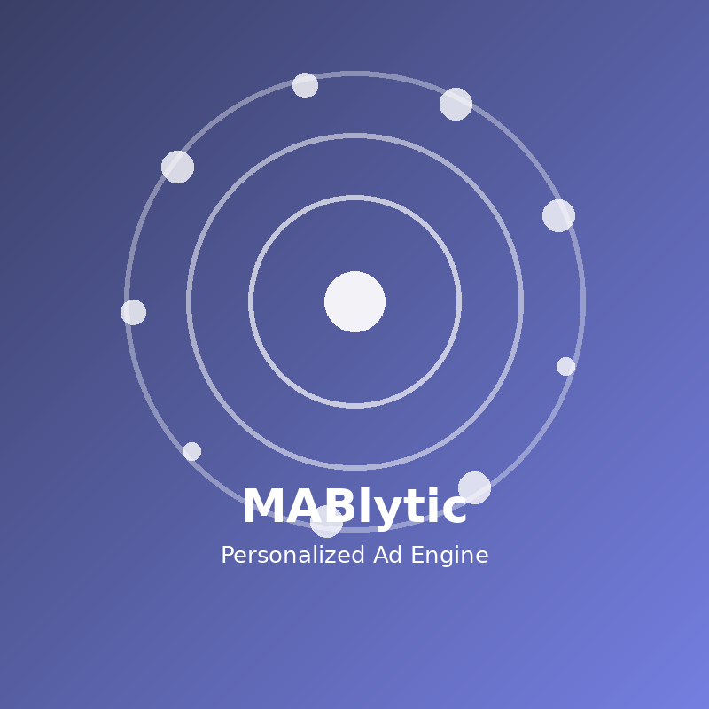

MABlytic
A full-stack Progressive Web App that serves real-time ads personalized to user preference profiles. Built with FastAPI and Vanilla JS, with a tracking pipeline that logs every view and click into SQLite to build a behavioral dataset for downstream ML training. Ad selection uses rule-based preference matching today, with a Thompson Sampling multi-armed bandit planned as the next iteration. A Service Worker enables offline functionality and installability as a standalone app.
Python
FastAPI
SQLAlchemy
SQLite
JavaScript
HTML5
CSS3
PWA